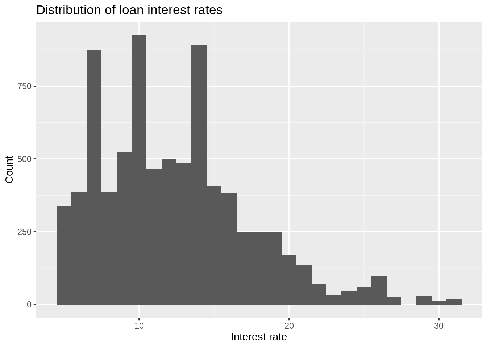
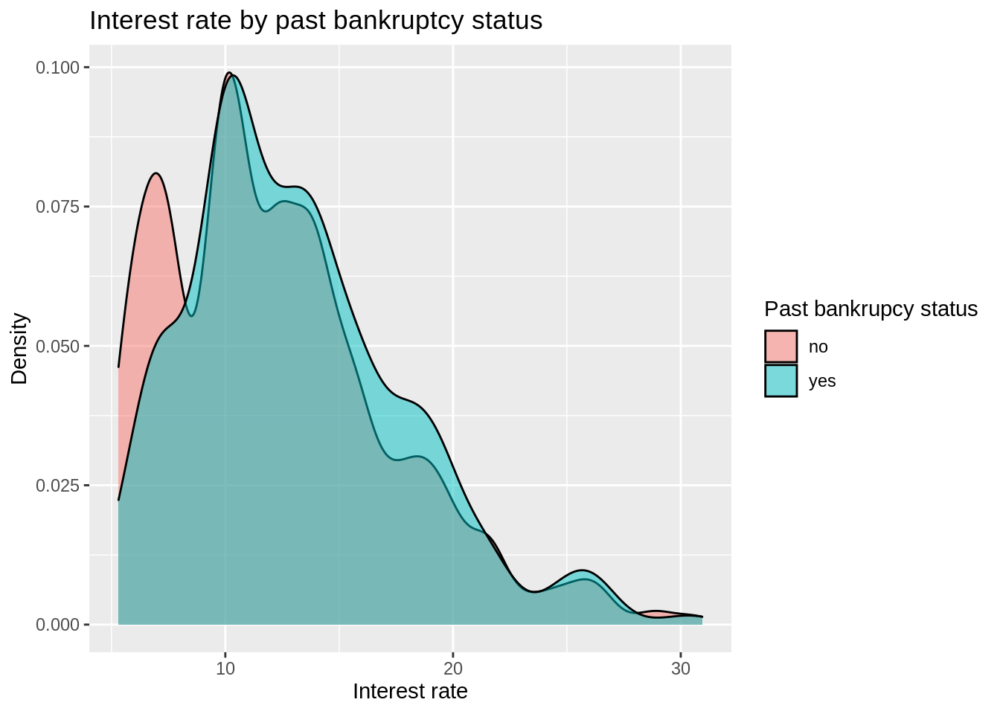
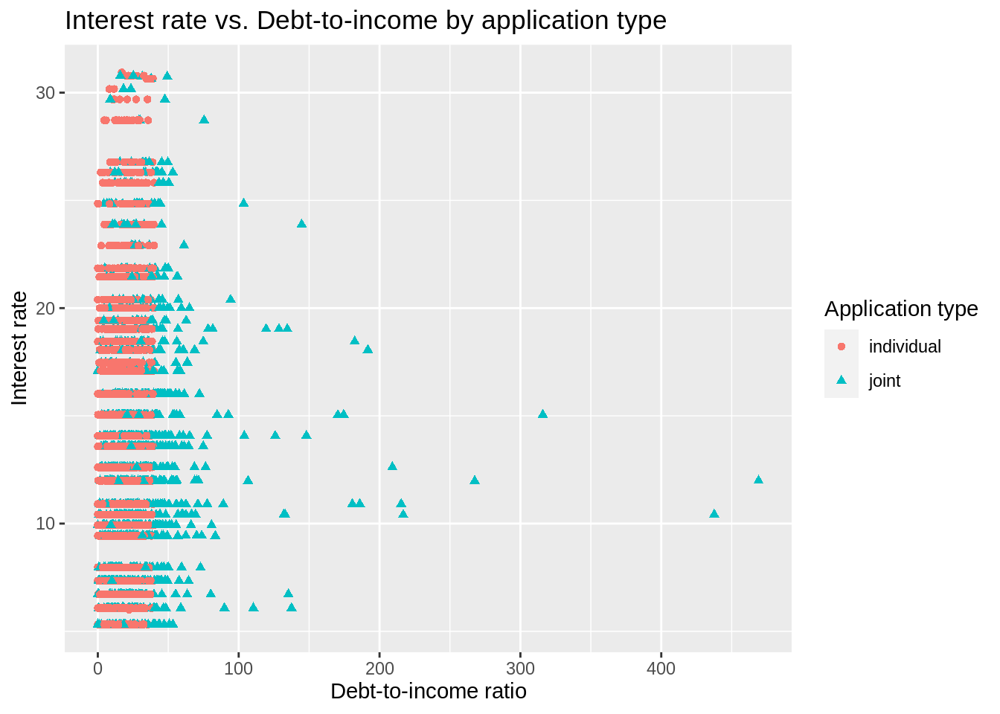

library(tidyverse)
library(tidymodels)
library(openintro)Full analysis
teach_ds :: Teaching modern modeling with tidymodels
Data
The data is the loans_full_schema data set from the openintro package and featured in the OpenIntro textbooks. It contains information about 50,000 loans made through the Lending Club platform.
The data has a bit of peculiarity about it, specifically the application_type variable is a factor variable with an empty level.
levels(loans_full_schema$application_type)[1] "" "individual" "joint" Let’s clean up this variable using the droplevels() function first. And let’s apply that to the whole data set, in case there are other variables with similar issues.
loans_full_schema <- droplevels(loans_full_schema)The variables we’ll use in this analysis are:
interest_rate: Interest rate of the loan the applicant received.debt_to_income: Debt-to-income ratio.public_record_bankrupt: Number of bankruptcies listed in the public record for this applicant.application_type: The type of application: eitherindividualorjoint.
Analysis objective
The goal is to fit a model to predict the interest rate (interest_rate) based on the debt to income ratio (debt_to_income), type of application (application_type), and whether there are any bankruptcies listed in the public record for the individual (bankrupt). The model should allow the effect of debt to income ratio to differ based on application type.
\[ \begin{align}\widehat{interest\_rate} = b_0 &+ b_1 \times debt\_to\_income \\ &+ b_2 \times application\_type \\ &+ b_3 \times bankrupt \\ &+ b_4 \times debt\_to\_income:application\_type\end{align} \]
Train / test split
Split the data into a training (80%) and test set (20%). Don’t forget to set a seed!
set.seed(0725)
loans_split <- initial_split(loans_full_schema, prop = 0.8)
loans_train <- training(loans_split)
loans_test <- testing(loans_split)The data exploration, recipe specification, and model fitting will be done using the training data.
Exploratory data analysis
Take a quick look at variables relevant for the model.
loans_train |>
select(interest_rate, debt_to_income, public_record_bankrupt, application_type) |>
glimpse()Rows: 8,000
Columns: 4
$ interest_rate <dbl> 6.72, 18.06, 7.97, 10.42, 18.06, 6.72, 9.44, 9.…
$ debt_to_income <dbl> 15.33, 39.57, 23.52, 26.11, 21.36, 20.95, 8.22,…
$ public_record_bankrupt <int> 1, 1, 0, 0, 0, 0, 0, 0, 0, 0, 0, 0, 0, 0, 1, 0,…
$ application_type <fct> individual, joint, individual, individual, indi…Create univariate, bivariate, and multivariate plots, and make sure to think about which plots are the most appropriate and effective given the data types.
Interest rate
ggplot(loans_train, aes(x = interest_rate)) +
geom_histogram(binwidth = 1) +
labs(
x = "Interest rate", y = "Count",
title = "Distribution of loan interest rates"
)
Interest rate by bankruptcy
loans_train |>
mutate(bankrupt = if_else(public_record_bankrupt == 0, "no", "yes")) |>
ggplot(aes(x = interest_rate, fill = bankrupt)) +
geom_density(alpha = 0.5) +
labs(
x = "Interest rate", y = "Density",
fill = "Past bankrupcy status",
title = "Interest rate by past bankruptcy status"
)
Interest rate vs. debt to income ratio by application type
ggplot(loans_train,
aes(x = debt_to_income, y = interest_rate,
color = application_type, shape = application_type)) +
geom_point() +
labs(
x = "Debt-to-income ratio", y = "Interest rate",
color = "Application type", shape = "Application type",
title = "Interest rate vs. Debt-to-income by application type"
)Warning: Removed 20 rows containing missing values (geom_point).
Model specification
loans_spec <- linear_reg() |>
set_engine("lm")Recipe
loans_rec <- recipe(interest_rate ~ debt_to_income + application_type +
public_record_bankrupt, data = loans_train) |>
step_impute_mean(debt_to_income) |>
step_mutate(bankrupt = as_factor(if_else(public_record_bankrupt == 0,
"no", "yes"))) |>
step_rm(public_record_bankrupt) |>
step_dummy(all_nominal_predictors()) |>
step_interact(terms = ~ starts_with("application_type"):debt_to_income)Build workflow
loans_workflow <- workflow() |>
add_model(loans_spec) |>
add_recipe(loans_rec)
loans_workflow══ Workflow ════════════════════════════════════════════════════════════════════
Preprocessor: Recipe
Model: linear_reg()
── Preprocessor ────────────────────────────────────────────────────────────────
5 Recipe Steps
• step_impute_mean()
• step_mutate()
• step_rm()
• step_dummy()
• step_interact()
── Model ───────────────────────────────────────────────────────────────────────
Linear Regression Model Specification (regression)
Computational engine: lm Fit model on training data
loans_train_fit <- loans_workflow |>
fit(data = loans_train)
tidy(loans_train_fit)# A tibble: 5 × 5
term estimate std.error statistic p.value
<chr> <dbl> <dbl> <dbl> <dbl>
1 (Intercept) 11.0 0.198 55.6 0
2 debt_to_income 0.111 0.00675 16.4 1.53e-59
3 application_type_joint 2.54 0.236 10.7 9.66e-27
4 bankrupt_no -0.781 0.167 -4.69 2.77e- 6
5 application_type_joint_x_debt_to_income -0.0985 0.00809 -12.2 8.27e-34Evaluate model
Training data
# Predictions
loans_train_pred <- predict(loans_train_fit, loans_train) |>
bind_cols(loans_train |> select(interest_rate))
## R-sq
rsq(loans_train_pred, truth = interest_rate, estimate = .pred)# A tibble: 1 × 3
.metric .estimator .estimate
<chr> <chr> <dbl>
1 rsq standard 0.0413## RMSE
rmse(loans_train_pred, truth = interest_rate, estimate = .pred)# A tibble: 1 × 3
.metric .estimator .estimate
<chr> <chr> <dbl>
1 rmse standard 4.87Testing data
Note: This is the first time we use the testing data!
# Predictions
loans_test_pred <- predict(loans_train_fit, loans_test) |>
bind_cols(loans_test |> select(interest_rate))
## R-sq
rsq(loans_test_pred, truth = interest_rate, estimate = .pred)# A tibble: 1 × 3
.metric .estimator .estimate
<chr> <chr> <dbl>
1 rsq standard 0.0386## RMSE
rmse(loans_test_pred, truth = interest_rate, estimate = .pred)# A tibble: 1 × 3
.metric .estimator .estimate
<chr> <chr> <dbl>
1 rmse standard 5.01Discussion
This document has focused on the code students would write to complete the analysis. Below are example writing prompts to help students think critically about the analysis process and interpret the results.
Exploratory data analysis
Using your plots above (along with any other metrics you compute), describe your initial findings about the training data. Discuss why we perform EDA only on the training data and not on the entire data set.
Model fit and evaluation
Although our primary aim is prediction and not inference, it may be of interest to view the model fit nonetheless to make sure nothing looks out of the ordinary. Create a neatly organized table of the model output, and describe your observations, such as which parameters are significant. Make sure to interpret some coefficients appropriately.